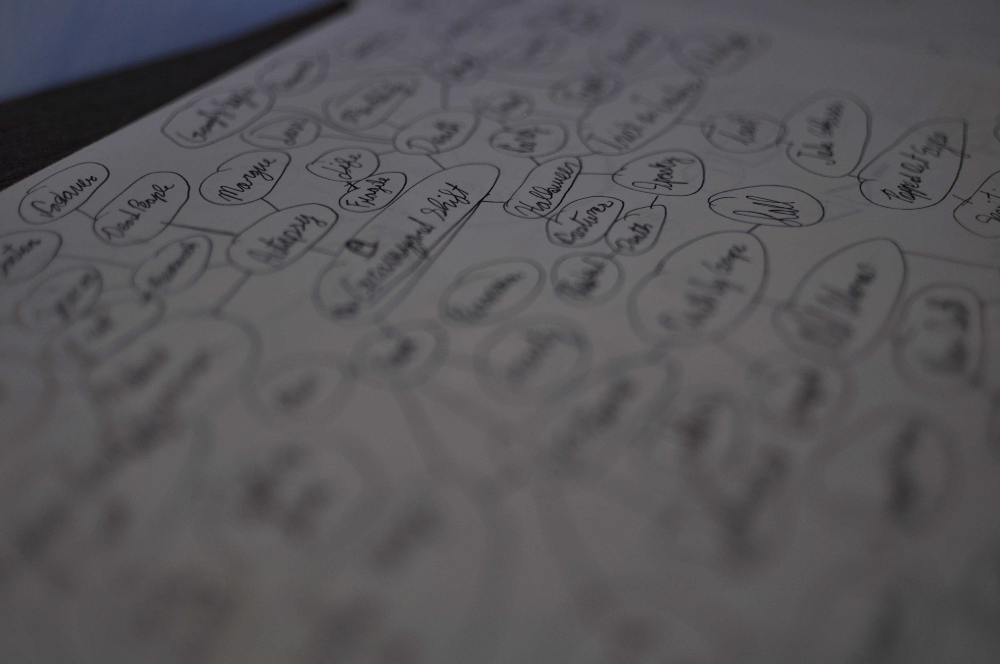
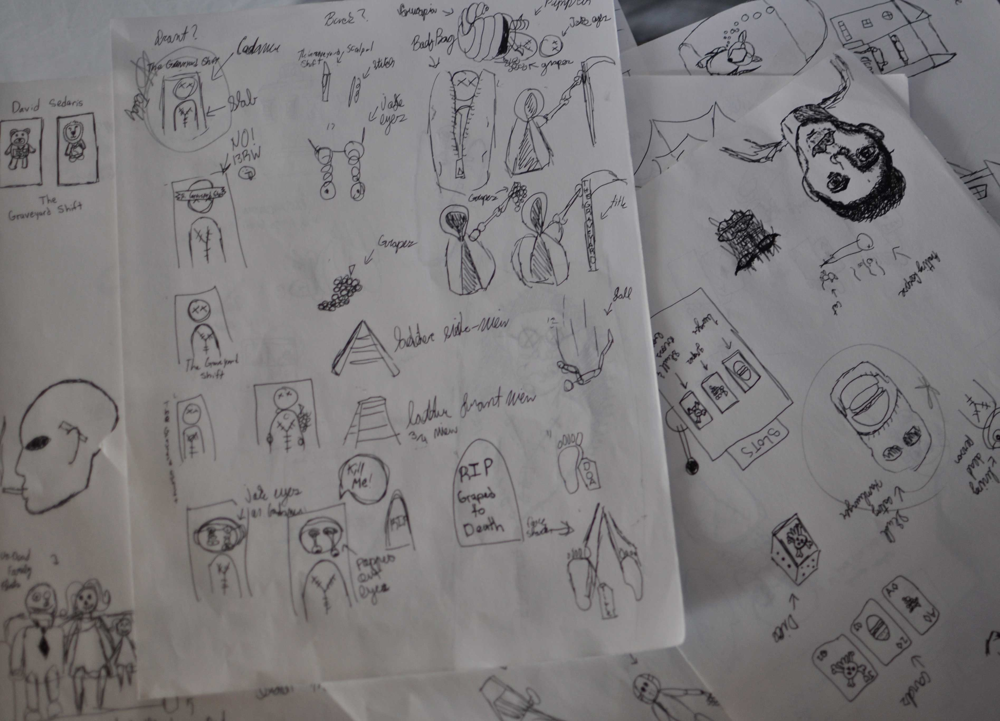
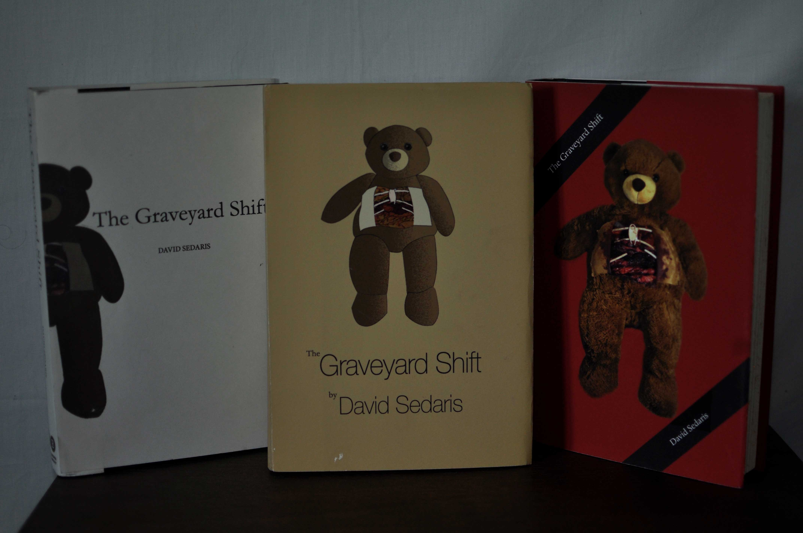
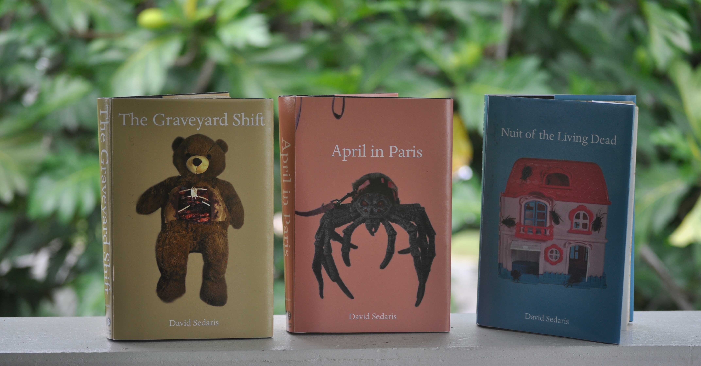

David Sedaris Book Covers

Brainstorming
To begin the process of designing these book covers I first did as much research on the stories. When researching I found key words and or concepts that incapsulated the stories these words and concepts would become the basis for the beginnings of creating these book cover designs.

Sketching
After the brainstorming and research phase I moved on to the sketching phase. Over 200 sketches were drawn in order to strengthen the potential of finding a couple of designs that work well. Not only showing and interesting concept design wise but also showed aspects of the story through visual means. Of these sketches three were chosen.

Drafts
After choosing some sketches I began looking for an artstyle for the book covers. The three styles are Photography, Digital Art, and a blend of both digital/photography. I also experimented using different colours and type as well.

Final
The final product was three book covers that use the photographic medium. The book covers are able to reflect David Sedaris' dark humor and the spirit of the content of his writing.